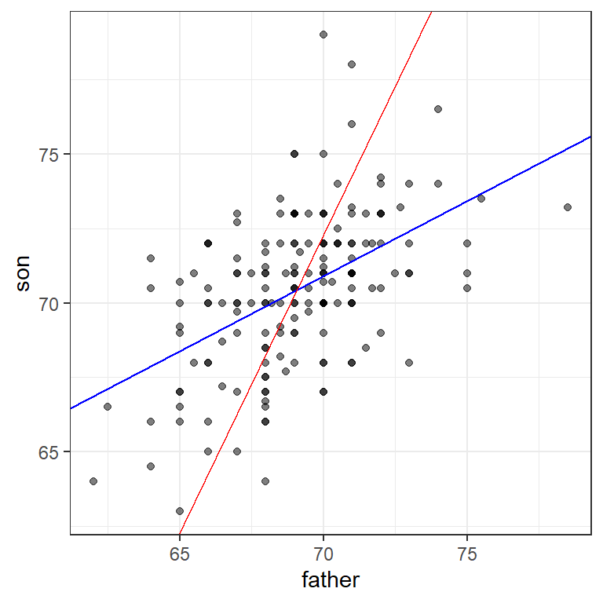
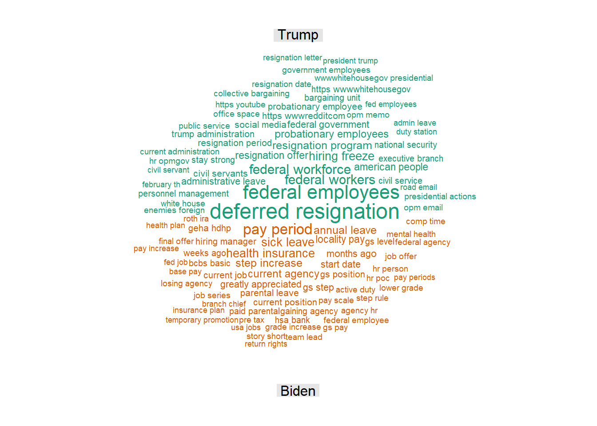

21 working with text: a case study
In this chapter, I present a rudimentary case study in which a contemporary issue is explored using R. I examine Reddit4 data, create comparison word-clouds from single words and two-word strings (bigrams), and consider the results of an external proprietary tool for examining categories of language. The chapter is based on the tidy approach to text analysis, for which a clear and thorough introduction has been provided in two books by Silge and her colleagues, each of which is available online Hvitfeldt and Silge (2021).
A word of warning: This chapter is light on the grunt work of data wrangling and preprocessing, which were introduced in Chapter 14. Keep in mind that that work is typically very time-consuming.
21.1 federal workers
On March 19, 2025, the New York Times ran an article with the title “Will I Lose My Job?’ Federal Workers Flock to Reddit for Answers.” The gist of the article was that US Federal workers, facing job insecurity in the opening days of President Trump’s second term, were using the r/fedworkers subreddit to connect with others and communicate their anxieties, concerns, and strategies.
But did they, though? Is there evidence that the r/fedworkers subreddit was being used in these ways? In the analysis that follows, I will examine posts5 to the community for the period from January 1, 2024 through March 24, 2025.
We’ll consider the following:
What specific words differentiate Trump era posts (since his second inauguration in January 2025) from those from the Biden era (prior to the November 2024 election)? For this, we’ll rely primarily on visualizations, in particular, differential word clouds of single words and bigrams.
What categories of speech differentiate the two epochs? For this, we’ll use a proprietary tool, Linguistic Inquiry and Word Count. LIWC is a widely used measure for extracting grammatical, social, and psychological variables from text [LIWC; Ryan L. Boyd et al. (2022)]. We’ll generate tables for the LIWC categories and examine the effect size and statistical significance of these differences.
This approach can optionally be extended to additional comparisons, including:
Are similar results obtained when we examine comments rather than posts? (Here, we could compare Trump-era words and categories with Biden-era words and categories).
How are comments and posts different from each other? (Here, we could compare words and categories for r/fedworkers posts with words and categories for r/fedworkers comments)
Does the content of posts (or comments) between the election and the inaugural more closely resemble that of the Biden era (as Biden was still president) or the coming Trump administration?
In order to address these questions, we’ll briefly touch on some auxiliary technical questions as well, including:
Should we ‘stem’ words prior to analysis? That is, should we treat terms such as (donut and donuts) as the same word or as different? How about (go and going)?
A similar question can be asked about case - should all characters be set to lowercase? That is, should (I’m and i’m) be treated as the same? How about (DOGE and doge)?
Should we include common stop words (a, and, if, or, me) in our analysis, or disregard them?
21.2 finding Reddit data
Although Reddit data became less accessible beginning in 2023, archives of Reddit posts and comments remain readily available following some simple Web sleuthing. In this block, I begin with a set of posts that I have already downloaded.
We initially look at a very small set of data - 100 lines - both to make sure the code works and, if it does, to make an initial determination about what fields are of interest. The file is large, so it will ultimately be read in through streaming rather than all-at-once, hence the readLines -> stream_in syntax.
posts <- read_lines("data/r_fednews_posts.jsonl", n_max = 100)
a1 <- stream_in(textConnection(
gsub("\\n","", posts))) ## Found 100 records... Imported 100 records. Simplifying...## Rows: 100
## Columns: 113
## $ `_meta` <df[,1]> <data.frame[26 x 1]>
## $ all_awardings <list> [], [], [], [], [], [], [], [], [], […
## $ allow_live_comments <lgl> FALSE, FALSE, FALSE, FALSE, FALSE, FALS…
## $ approved_at_utc <lgl> NA, NA, NA, NA, NA, NA, NA, NA, NA, NA, …
## $ approved_by <lgl> NA, NA, NA, NA, NA, NA, NA, NA, NA, NA, …
## $ archived <lgl> FALSE, FALSE, FALSE, FALSE, FALSE, FALSE…
## $ author <chr> "Unlikely_Story1424", "lakepirate1775", …
## $ author_flair_background_color <chr> NA, NA, NA, NA, NA, NA, NA, NA, NA, NA, …
## $ author_flair_css_class <lgl> NA, NA, NA, NA, NA, NA, NA, NA, NA, NA, …
## $ author_flair_richtext <list> [], [], [], [], [], [], [], [], [], [], …
## $ author_flair_template_id <lgl> NA, NA, NA, NA, NA, NA, NA, NA, NA, NA,…
## $ author_flair_text <lgl> NA, NA, NA, NA, NA, NA, NA, NA, NA, NA, …
## $ author_flair_text_color <chr> NA, NA, NA, NA, "dark", NA, NA, NA, NA, …
## $ author_flair_type <chr> "text", "text", "text", "text", "text", …
## $ author_fullname <chr> "t2_dvmjwod3g", "t2_3z3p2fng", "t2_r0erp…
## $ author_is_blocked <lgl> FALSE, FALSE, FALSE, FALSE, FALSE, FALSE…
## $ author_patreon_flair <lgl> FALSE, FALSE, FALSE, FALSE, FALSE, FALSE…
## $ author_premium <lgl> FALSE, FALSE, FALSE, FALSE, FALSE, FALSE…
## $ awarders <list> [], [], [], [], [], [], [], [], [], [], …
## $ banned_at_utc <lgl> NA, NA, NA, NA, NA, NA, NA, NA, NA, NA,…
## $ banned_by <lgl> NA, NA, NA, NA, NA, NA, NA, NA, NA, NA, …
## $ can_gild <lgl> FALSE, FALSE, FALSE, FALSE, FALSE, FALSE…
## $ can_mod_post <lgl> FALSE, FALSE, FALSE, FALSE, FALSE, FALSE…
## $ category <lgl> NA, NA, NA, NA, NA, NA, NA, NA, NA, NA, …
## $ clicked <lgl> FALSE, FALSE, FALSE, FALSE, FALSE, FALSE…
## $ content_categories <lgl> NA, NA, NA, NA, NA, NA, NA, NA, NA, NA, …
## $ contest_mode <lgl> FALSE, FALSE, FALSE, FALSE, FALSE, FALSE…
## $ created <int> 1704074487, 1704075982, 1704083189, 1704…
## $ created_utc <int> 1704074487, 1704075982, 1704083189, 1704…
## $ discussion_type <lgl> NA, NA, NA, NA, NA, NA, NA, NA, NA, NA, …
## $ distinguished <lgl> NA, NA, NA, NA, NA, NA, NA, NA, NA, NA, …
## $ domain <chr> "self.fednews", "self.fednews", "self.fe…
## $ downs <int> 0, 0, 0, 0, 0, 0, 0, 0, 0, 0, 0, 0, 0, 0…
## $ edited <int> 0, 0, 0, 0, 0, 0, 0, 0, 0, 0, 0, 0, 0, 0…
## $ gilded <int> 0, 0, 0, 0, 0, 0, 0, 0, 0, 0, 0, 0, 0, 0…
## $ gildings <df[,0]> <data.frame[26 x 0]>
## $ hidden <lgl> FALSE, FALSE, FALSE, FALSE, FALSE, FALSE…
## $ hide_score <lgl> TRUE, TRUE, TRUE, TRUE, TRUE, TRUE, T…
## $ id <chr> "18vmmmu", "18vn1fo", "18vox52", "18voyk…
## $ is_created_from_ads_ui <lgl> FALSE, FALSE, FALSE, FALSE, FALSE, FALSE…
## $ is_crosspostable <lgl> FALSE, TRUE, FALSE, FALSE, FALSE, TRUE, …
## $ is_meta <lgl> FALSE, FALSE, FALSE, FALSE, FALSE, FALSE…
## $ is_original_content <lgl> FALSE, FALSE, FALSE, FALSE, FALSE, FALSE…
## $ is_reddit_media_domain <lgl> FALSE, FALSE, FALSE, FALSE, FALSE, FALSE…
## $ is_robot_indexable <lgl> FALSE, TRUE, FALSE, FALSE, FALSE, TRUE, …
## $ is_self <lgl> TRUE, TRUE, TRUE, TRUE, TRUE, TRUE, TRUE…
## $ is_video <lgl> FALSE, FALSE, FALSE, FALSE, FALSE, FALSE…
## $ likes <lgl> NA, NA, NA, NA, NA, NA, NA, NA, NA, NA, …
## $ link_flair_background_color <chr> "", "", "", "", "", "", "", NA, "", "", …
## $ link_flair_css_class <chr> NA, NA, "e", NA, "c", "c", NA, "c", NA, …
## $ link_flair_richtext <list> [<data.frame[0 x 0]>], [<data.frame[0 x …
## $ link_flair_text <chr> NA, NA, "Misc", NA, "Pay & Benefits", "P…
## $ link_flair_text_color <chr> "dark", "dark", "dark", "dark", "dark",…
## $ link_flair_type <chr> "text", "text", "richtext", "text", "ric…
## $ locked <lgl> FALSE, FALSE, FALSE, FALSE, FALSE, FALSE…
## $ media <lgl> NA, NA, NA, NA, NA, NA, NA, NA, NA, NA, …
## $ media_embed <df[,0]> <data.frame[26 x 0]>
## $ media_only <lgl> FALSE, FALSE, FALSE, FALSE, FALSE, FALSE…
## $ mod_note <lgl> NA, NA, NA, NA, NA, NA, NA, NA, NA, NA, …
## $ mod_reason_by <lgl> NA, NA, NA, NA, NA, NA, NA, NA, NA, N…
## $ mod_reason_title <lgl> NA, NA, NA, NA, NA, NA, NA, NA, NA, NA, …
## $ mod_reports <list> [], [], [], [], [], [], [], [], [], [], …
## $ name <chr> "t3_18vmmmu", "t3_18vn1fo", "t3_18vox52"…
## $ no_follow <lgl> TRUE, TRUE, TRUE, TRUE, TRUE, TRUE, TRUE…
## $ num_comments <int> 1, 15, 1, 1, 1, 19, 1, 61, 220, 95, 1, …
## $ num_crossposts <int> 0, 0, 0, 0, 0, 0, 0, 0, 0, 0, 0, 0, 0, 0…
## $ num_reports <int> 0, 0, 0, 0, 0, 0, 0, 0, 0, 0, 0, 0, 0, 0…
## $ over_18 <lgl> FALSE, FALSE, FALSE, FALSE, FALSE, FALSE…
## $ parent_whitelist_status <chr> "all_ads", "all_ads", "all_ads", "all_ad…
## $ permalink <chr> "/r/fednews/comments/18vmmmu/historical_…
## $ pinned <lgl> FALSE, FALSE, FALSE, FALSE, FALSE, FALSE…
## $ previous_selftext <chr> "[removed]", NA, NA, NA, NA, NA, NA, NA,…
## $ pwls <int> 6, 6, 6, 6, 6, 6, 6, 6, 6, 6, 6, 6, 6, 6…
## $ quarantine <lgl> FALSE, FALSE, FALSE, FALSE, FALSE, FALSE…
## $ removal_reason <lgl> NA, NA, NA, NA, NA, NA, NA, NA, NA, NA, …
## $ removed_by <lgl> NA, NA, NA, NA, NA, NA, NA, NA, NA, NA, …
## $ removed_by_category <chr> "automod_filtered", NA, "moderator", "mo…
## $ report_reasons <list> [], [], [], [], [], [], [], [], [], [], …
## $ retrieved_on <int> 1704074505, 1704075998, 1704083206, 1704…
## $ saved <lgl> FALSE, FALSE, FALSE, FALSE, FALSE, FALSE…
## $ score <int> 1, 1, 1, 1, 1, 1, 1, 19, 1, 1, 1, 1, 1,…
## $ secure_media <lgl> NA, NA, NA, NA, NA, NA, NA, NA, NA, NA, …
## $ secure_media_embed <df[,0]> <data.frame[26 x 0]>
## $ selftext <chr> "Anyone else here use Mint to track thei…
## $ send_replies <lgl> TRUE, TRUE, TRUE, TRUE, TRUE, TRUE, TRUE…
## $ spoiler <lgl> FALSE, FALSE, FALSE, FALSE, FALSE, FALSE…
## $ stickied <lgl> FALSE, FALSE, FALSE, FALSE, FALSE, FA…
## $ subreddit <chr> "fednews", "fednews", "fednews", "fednew…
## $ subreddit_id <chr> "t5_2xy8z", "t5_2xy8z", "t5_2xy8z", "t5_…
## $ subreddit_name_prefixed <chr> "r/fednews", "r/fednews", "r/fednews", "…
## $ subreddit_subscribers <int> 72988, 72990, 73009, 73010, 73027, 73027…
## $ subreddit_type <chr> "public", "public", "public", "public", …
## $ suggested_sort <chr> "confidence", "confidence", "confidence"…
## $ thumbnail <chr> "self", "self", "self", "self", "self", …
## $ thumbnail_height <int> NA, NA, NA, NA, NA, NA, NA, NA, NA, NA, …
## $ thumbnail_width <int> NA, NA, NA, NA, NA, NA, NA, NA, NA, NA, …
## $ title <chr> "Historical TSP Data + Mint Shutdown", "…
## $ top_awarded_type <lgl> NA, NA, NA, NA, NA, NA, NA, NA, NA, NA, …
## $ total_awards_received <int> 0, 0, 0, 0, 0, 0, 0, 0, 0, 0, 0, 0, 0, 0…
## $ treatment_tags <list> [], [], [], [], [], [], [], [], [], [], …
## $ ups <int> 1, 1, 1, 1, 1, 1, 1, 19, 1, 1, 1, 1, 1, …
## $ upvote_ratio <dbl> 1.00, 1.00, 1.00, 1.00, 1.00, 1.00, 1.00…
## $ url <chr> "https://www.reddit.com/r/fednews/commen…
## $ user_reports <list> [], [], [], [], [], [], [], [], [], [],…
## $ view_count <lgl> NA, NA, NA, NA, NA, NA, NA, NA, NA, NA, …
## $ visited <lgl> FALSE, FALSE, FALSE, FALSE, FALSE, FALSE…
## $ whitelist_status <chr> "all_ads", "all_ads", "all_ads", "all_ad…
## $ wls <int> 6, 6, 6, 6, 6, 6, 6, 6, 6, 6, 6, 6, 6, …
## $ link_flair_template_id <chr> NA, NA, "998fe156-1729-11e4-9ea3-12313b0…
## $ media_metadata <df[,1]> <data.frame[26 x 1]>
## $ post_hint <chr> NA, NA, NA, NA, NA, NA, NA, NA, NA, NA, …
## $ preview <df[,2]> <data.frame[26 x 2]>
## $ url_overridden_by_dest <chr> NA, NA, NA, NA, NA, NA, NA, NA, NA, NA, …Only a few columns are of interest to us. We select those columns in the next chunk, for a sample of 10000 posts. We also take note of how long it takes to read a sample of this size by noting start-time, end.time, and the difference between these. Finally we make the date-time field (created_utc) field “human readable.”
posts <- read_lines("data/r_fednews_posts.jsonl", n_max = 10000)
start.time <- Sys.time()
a1 <- stream_in(textConnection(
gsub("\\n","", posts))) |>
select(author, title, selftext, id, link_flair_text,
num_comments, ups, downs, subreddit, created_utc) |>
mutate (date = (as_datetime(created_utc))) |>
select(-created_utc)## Found 500 records... Found 1000 records... Found 1500 records... Found 2000 records... Found 2500 records... Found 3000 records... Found 3500 records... Found 4000 records... Found 4500 records... Found 5000 records... Found 5500 records... Found 6000 records... Found 6500 records... Found 7000 records... Found 7500 records... Found 8000 records... Found 8500 records... Found 9000 records... Found 9500 records... Found 10000 records... Imported 10000 records. Simplifying...## Time difference of 7.90551 secsLooks good - the date/time field is clean, the columns are those that we want, and it only took a few seconds to read in 10,000 posts. Let’s read them all in, then take a look at a small random sample - 10 - of the texts of the posts.
posts <- read_lines("data/r_fednews_posts.jsonl")
start.time <- Sys.time()
a1 <- stream_in(textConnection(
gsub("\\n","", posts))) |>
select(author, title, selftext, id, link_flair_text,
num_comments, score, subreddit, created_utc) |>
mutate (date = (as_datetime(created_utc))) |>
select(-created_utc)## Found 500 records... Found 1000 records... Found 1500 records... Found 2000 records... Found 2500 records... Found 3000 records... Found 3500 records... Found 4000 records... Found 4500 records... Found 5000 records... Found 5500 records... Found 6000 records... Found 6500 records... Found 7000 records... Found 7500 records... Found 8000 records... Found 8500 records... Found 9000 records... Found 9500 records... Found 10000 records... Found 10500 records... Found 11000 records... Found 11500 records... Found 12000 records... Found 12500 records... Found 13000 records... Found 13500 records... Found 14000 records... Found 14500 records... Found 15000 records... Found 15500 records... Found 16000 records... Found 16500 records... Found 17000 records... Found 17500 records... Found 18000 records... Found 18500 records... Found 19000 records... Found 19500 records... Found 20000 records... Found 20500 records... Found 21000 records... Found 21500 records... Found 22000 records... Found 22500 records... Found 23000 records... Found 23500 records... Found 24000 records... Found 24500 records... Found 25000 records... Found 25500 records... Found 26000 records... Found 26500 records... Found 27000 records... Found 27500 records... Found 28000 records... Found 28500 records... Found 29000 records... Found 29500 records... Found 30000 records... Found 30500 records... Found 31000 records... Found 31500 records... Found 32000 records... Found 32500 records... Found 33000 records... Found 33500 records... Found 34000 records... Found 34500 records... Found 35000 records... Found 35500 records... Found 36000 records... Found 36500 records... Found 37000 records... Found 37500 records... Found 38000 records... Found 38500 records... Found 39000 records... Found 39500 records... Found 40000 records... Found 40500 records... Found 41000 records... Found 41500 records... Found 42000 records... Found 42500 records... Found 43000 records... Found 43500 records... Found 44000 records... Found 44500 records... Found 45000 records... Found 45500 records... Found 46000 records... Found 46500 records... Found 47000 records... Found 47500 records... Found 48000 records... Found 48500 records... Found 49000 records... Found 49500 records... Found 50000 records... Found 50500 records... Found 51000 records... Found 51500 records... Found 52000 records... Found 52500 records... Found 53000 records... Found 53500 records... Found 54000 records... Found 54500 records... Found 55000 records... Found 55500 records... Found 56000 records... Found 56500 records... Found 57000 records... Found 57500 records... Found 58000 records... Found 58500 records... Found 59000 records... Found 59500 records... Found 59651 records... Imported 59651 records. Simplifying...## Time difference of 2.655577 mins## selftext
## 1 ACA and IRA provided alternate funding sources for several agencies to hire new FTEs. In my agency even when there was a hiring freeze from the general “congress appropriations” hiring budget, we were allowed to bring new people on through the IRA as direct hires. The ACA is also very contentious. If those laws get repealed what happens to those employees?
## 2 [removed]
## 3 [removed]
## 4 I am a supervisor in USDA, more specifically FPAC. I have asked the higher ups for HR guidance on a problem employee (this has gone on for 3-4 years) and have received none. I have sent in numerous emails, detailing running records - the only documentation they have or considered doing anything on said employee was 3 years ago when she assaulted another employee. \n\nI have become excellent writing running records, I’ve learned valuable leadership and management skills when they said “maybe I am the one who needed to change.” They continue to fail to take any action. I asked for training on issues that pop up with her and nothing. I felt like I was crazy but visiting with EAP helped, the therapist was able to spot her out and personality quickly. I felt relieved. I try to stay positive but she brings down the whole office. She started bullying the other employees in another department (we’re open concept so they sit near each other) and I’m fed up. \n\nCan anyone point me to specific policies/ procedures from FPAC that I can utilize to track her performance and conduct? \nYes, I keep detailed running records but I don’t know what “counts” that can be written up. \n\n*Please note* I am not looking for things to write her up on, employee goes through “cycles” her mood in the office is like a roller coaster, and after working with her for 4 years and 5 years of managing her, I can predict with precision what she will do next. So this outburst she had with the other employees is just the start of what’s to come.
## 5 [removed]
## 6
## 7 If the Supreme Court overturns Humphrey’s Executor, would all civil service protections be at risk? I understand that principal officers would no longer be protected from presidential whims, but what about the rank and file? Would the overturning of Humphrey’s Executor mean that the Pendleton Act and all subsequent civil service protections are unconstitutional and void?
## 8 Other than sharing how we lost our jobs because of the illegal firings, what should we demand them to do? Argue that we should have a government shutdown next month? What emergency countermeasures, if any, do Democrats have right now that they can use?
## 9 [removed]
## 10 We are NTEU 335, the union representing 1,100 CFPB employees, and we will be rallying at HQ today to protest the attack on the CFPB and its workers, who were locked out of their offices over the weekend. Please join us!\n\nWhere: CFPB Headquarters, 1700 G St NW, Washington DC 20552\n\nWhen: 4:15 pm, TODAY, February 10\n\nWho: YOU!!!These 59651 posts include all of those which were available for the period from January 1, 2024 through March 24, 2025.
21.3 some initial observations
There are a few interesting properties of the data:
One is that it appears that many of the posts have been removed, including 4 out of this (very small) sample of 10. It would be interesting to compare the proportion of deleted posts to this subreddit with those of other subreddits during the same period. (I would anticipate that this proportion is much higher in this subreddit, likely because of fears of retribution that may or may not be warranted). We should keep in mind that the removed or deleted posts are unlikely to be a random sample of posts on the subreddit - they may be more angry, more polarized, and/or more easily de-anonymized. We should return to this when we consider our results. For now, we will filter out the removed posts.
- One way to examine this empirically would be to examine the ‘titles’ field. The removed posts still include titles, so the nature of the removed posts in comparison with the non-removed posts could be examined by using the “compare words and categories” approach on the title fields of the two sets.
The second is that there are, at least in this small sample, a lot of abbreviations and acronyms - including ACA, IRA, USDA, FPAC, NTEU, CFPB, HQ, and EAP. Often, at this point in an analysis of text, we would reformat the text so that all words were lowercase (with the tolower) function. We’ll instead modify this a bit - retaining capitalization when a token is in ALL CAPS (and is more than a single character like “I” or “A”) - and making into lowercase otherwise.
21.4 preprocessing
In this next chunk, we create a new variable called ‘epoch,’ with three values, Biden (during the Biden presidency, but before the November election, Lameduck (the period between the election and Trump’s second inauguration), and Trump. We treat the ‘lameduck’ period separately because, although Biden was President, Trump, and concerns about the coming Trump presidency, was dominant on the airwaves. In these initial comparisons, we’ll exclude that lameduck period from analysis
We also take the content of the posts and unravel them, with one line per word (so that a post which had 100 words would be 100 lines in the new, tidy datafile). Call this file tidyCorpus0 (a corpus is a body of text).
We then selectively set the text to lowercase (retaining uppercase only when a multi-character token, or word, is in ALL CAPS). This gives us tidyCorpus1.
We also remove stopwords from the text in order to simplify and shorten the texts; acknowledging that there are often good reasons not to do this Pennebaker et al. (2014). We’ll remove numbers from the text in the same step. Call this file tidyCorpus2.
Finally, we stem the text, reducing each word to its common stem, using the SnowballC library. This gives is tidyCorpus3. If we were to stem the text, we would move ahead with this file rather than tidyCorpus2. For more on stemming, please consider Hvitfeldt and Slige(2021), which is available online.
set.seed(33458)
a2 <- a1 |> filter (selftext != "[removed]") |>
mutate (epoch = case_when (
date < "2024-11-06 00:00:00" ~ "Biden",
date > "2025-01-20 12:00:00" ~ "Trump",
TRUE ~ "Lameduck"
))
tidyCorpus0 <- a2 |>
unnest_tokens(word, selftext, to_lower = FALSE)
tidyCorpus1 <- tidyCorpus0 |>
mutate (word = case_when(
# if changing a word to uppercase has no effect ...
(toupper(word) == word) &
# amd the word is more than 1 character long, keep it as is
nchar(word) > 1 ~ word,
# else change it to lowercase
TRUE ~ tolower(word)))
# tidyCorpus2 gets rid of numbers and removes stop words
tidyCorpus2 <- tidyCorpus1 |>
anti_join(stop_words) |>
mutate(word = gsub(x = word,
pattern = "[0-9]+|[[:punct:]]|\\(.*\\)",
replacement = "")) |>
filter (word != "")
# tidyCorpus3 takes the additional step of stemming the data
tidyCorpus3 <- tidyCorpus2 |>
mutate(word = wordStem(word))21.5 comparing the words and stems
We reduce each of the the three tidy corpora (bodies of text) to simple frequency tables
nwordsCorpus0 <- tidyCorpus0 |> count (word) |> nrow()
nwordsCorpus1 <- tidyCorpus1 |> count (word) |> nrow()
nwordsCorpus2 <- tidyCorpus2 |> count (word) |> nrow()
nwordsCorpus3 <- tidyCorpus3 |> count (word) |> nrow()Whereas there were 58154 words in the initial data, this drops to 49447 when we (mostly) represent all words as lower case. It drops further to 41586 when we remove numbers and stop words, and finally to 29338 when we stem the data.
21.6 Construction of differential word clouds
We first take the corpus and reshape it to a matrix with row names (words) and counts (one column for each group).
wideCorpus2 <- tidyCorpus2 |>
filter (epoch != "Lameduck") |>
count(epoch, word, sort = TRUE) |>
pivot_wider(names_from = epoch, values_from = n,
values_fill = 0) |>
column_to_rownames(var = "word") |>
# filter out words that don't appear at least a few times in each group
# and also removes words that are too rare to be useful for comparison
mutate (mincount = pmin(Biden, Trump)) |>
filter (mincount > 4) |>
select (-mincount) |>
as.matrix(rownames = TRUE)
head(wideCorpus2,5)## Trump Biden
## federal 7200 2346
## employees 6351 1008
## people 4930 1246
## https 4801 762
## im 3975 3281The comparison.cloud function from the wordcloud package is used to show the greatest relative proportions of words in each group (in that function, the scale parameters will need to be adjusted to get the best visual representation).
comparison.cloud(wideCorpus2,
scale = c(1.5,.5),
max.words=100,
random.order=FALSE,
rot.per = 0,
use.r.layout=FALSE,
family="sans",
title.size=1)
Many of the words which appear disproportionately in the Trump corpus (employees, https, federal, government) appear relatively neutral in emotional tone, although there are also terms such as fired and resignation here. On the Biden side, the abbreviation GS (for General Schedule, describing the level of various positions in civil service), together with position, job, HR, step, hours, and supervisor indicates that most posts refer to employment issues.
Interesting, but perhaps less than we might have expected. Will an analysis of two-word strings (bigrams) provide more insight?
21.7 bigrams
The comparison cloud illustrates differences in single-word occurrences between the Biden and Trump epochs in r/fedworkers. Here, we repeat the analysis, investigating two-word strings. Note that in order to remove stopwords and numbers, we fist combine adjacent words (tokens) into bigrams, then separate these into pairs of adjacent words, filter on each of these adjacent words, and rejoin them.
tidyBigrams <- a2 |>
filter (epoch != "Lameduck") |>
unnest_tokens(bigram, selftext, token = "ngrams", n = 2) |>
separate(bigram,c("word1", "word2"), sep = " ") |>
anti_join(stop_words, by = join_by("word1" == "word")) |>
anti_join(stop_words, by = join_by("word2" == "word")) |>
mutate(word1 = gsub(x = word1,
pattern = "[0-9]+|[[:punct:]]|\\(.*\\)",
replacement = "")) |>
mutate(word2 = gsub(x = word2,
pattern = "[0-9]+|[[:punct:]]|\\(.*\\)",
replacement = "")) |>
drop_na() |>
filter (word1 != "") |>
filter (word2 != "") |>
unite(bigram, word1, word2, sep = " ")
bigramCounts <- tidyBigrams |>
count(epoch, bigram, sort = TRUE) |>
pivot_wider(names_from = epoch, values_from = n,
values_fill = 0) |>
column_to_rownames(var = "bigram") |>
as.matrix(rownames = TRUE)
comparison.cloud(bigramCounts,
scale = c(1.5,.5),
max.words=100,
random.order=FALSE,
rot.per = 0,
use.r.layout=FALSE,
family="sans",
title.size=1)
Here, the language of the two epochs comes into clearer focus, with phrases such as deferred resignation characterizing the Trump epoch and the relatively benign pay period characterizing the Biden period.
21.8 categories of words
In my own research, I rely on a proprietary tool, Linguistic Inquiry and Word Count. Though LIWC can be run within R on a machine that has the license for the software, here I run the program externally, then reimport it into R.
21.9 Code for assessing LIWC effect sizes between 2 groups
There are many measures, or categories, in LIWC. In order to assess the statistical significance of differecnces between the Biden and Trump epochs on LIWC, the simplest approach is to adjust for the number of comparisons using the Bonferroni correction. The number of LIWC categories is 117, so the Bonferroni p-value should be .05/117 = .000427.
This chunk uses three different libraries describe function from the psych package to get means, standard deviations, and sample sizes for each LIWC category. Then it computes the effect sizes and associated statistics using the mes function from the compute.es package and makes tables for the LIWC variables with the largest effects.
BonferroniP <- (.05/117) # 117 is the number of LIWC categories# simple descriptives
BidenEpoch <- fedworkersLIWC |>
filter (epoch == "Biden") |>
select(WC:OtherP) |>
describe() |> # from the psych package
select(BidenN=n, BidenM = mean, BidenSD = sd) |>
round(2)
TrumpEpoch <- fedworkersLIWC |>
filter (epoch == "Trump") |>
select(WC:OtherP) |>
describe() |>
select(TrumpN=n, TrumpM = mean, TrumpSD = sd) |>
round(2)
poststats <- BidenEpoch |>
bind_cols (TrumpEpoch)
# from the compare.es package.
Effects <- mes(poststats[,2],
poststats[,5],
poststats[,3],
poststats[,6],
poststats[,1],poststats[,4],
level = BonferroniP,
verbose = FALSE) |>
select(d, l.d, u.d, pval.d)
LIWCSummary <- poststats |>
bind_cols(Effects) |>
select(-BidenN, -TrumpN) |>
write_csv("data/LIWCeffects.csv")
Nsignificant <- Effects |>
mutate (sig = case_when (pval.d < BonferroniP ~ 1,
TRUE ~ 0)) |>
summarise(sum = sum(sig)) |>
as.numeric()
BidenN <- min(poststats$BidenN)
TrumpN <- min(poststats$TrumpN)
LIWCSummary |>
slice_max(d, n = 10) |>
kable(caption = "LIWC categories in r/fedworkers most associated with the Biden era") |>
kable_styling() %>%
add_footnote(paste0(
"Note: BidenNs >= ",
min(poststats$BidenN),
" TrumpNs >= ",
min(poststats$TrumpN)))| BidenM | BidenSD | TrumpM | TrumpSD | d | l.d | u.d | pval.d | |
|---|---|---|---|---|---|---|---|---|
| Authentic | 72.81 | 31.07 | 52.05 | 36.62 | 0.59 | 0.59 | 0.59 | 0 |
| i | 6.33 | 4.44 | 3.68 | 4.64 | 0.58 | 0.58 | 0.58 | 0 |
| Tone | 41.36 | 29.32 | 31.28 | 28.63 | 0.35 | 0.35 | 0.35 | 0 |
| Dic | 89.69 | 7.90 | 86.08 | 12.16 | 0.33 | 0.33 | 0.33 | 0 |
| function | 54.47 | 10.41 | 50.53 | 15.62 | 0.28 | 0.28 | 0.28 | 0 |
| money | 1.55 | 2.50 | 0.91 | 2.23 | 0.28 | 0.28 | 0.28 | 0 |
| Linguistic | 69.16 | 10.82 | 65.14 | 16.25 | 0.27 | 0.27 | 0.27 | 0 |
| conj | 6.46 | 3.26 | 5.52 | 3.79 | 0.26 | 0.26 | 0.26 | 0 |
| time | 5.33 | 4.21 | 4.23 | 4.36 | 0.26 | 0.26 | 0.26 | 0 |
| achieve | 1.67 | 2.02 | 1.23 | 1.87 | 0.23 | 0.23 | 0.23 | 0 |
| Lifestyle | 6.82 | 4.34 | 5.75 | 4.81 | 0.23 | 0.23 | 0.23 | 0 |
| a Note: BidenNs >= 9010 TrumpNs >= 19068 |
LIWCSummary |>
slice_min(d, n = 10) |>
kable(caption = "LIWC categories in r/fedworkers most associated with the Trump era") |>
kable_styling() %>%
add_footnote(paste0(
"Note: BidenNs >= ",
min(poststats$BidenN),
" TrumpNs >= ",
min(poststats$TrumpN)))| BidenM | BidenSD | TrumpM | TrumpSD | d | l.d | u.d | pval.d | |
|---|---|---|---|---|---|---|---|---|
| Clout | 23.33 | 28.67 | 42.22 | 33.36 | -0.59 | -0.59 | -0.59 | 0 |
| Culture | 1.26 | 2.39 | 2.70 | 4.10 | -0.40 | -0.40 | -0.40 | 0 |
| we | 0.46 | 1.29 | 1.14 | 2.34 | -0.33 | -0.33 | -0.33 | 0 |
| tone_neg | 1.03 | 2.05 | 2.05 | 3.73 | -0.31 | -0.31 | -0.31 | 0 |
| tech | 0.56 | 1.68 | 1.44 | 3.23 | -0.31 | -0.31 | -0.31 | 0 |
| Social | 8.76 | 5.96 | 10.92 | 7.60 | -0.30 | -0.30 | -0.30 | 0 |
| socrefs | 4.93 | 4.43 | 6.47 | 5.37 | -0.30 | -0.30 | -0.30 | 0 |
| affiliation | 1.13 | 2.31 | 1.91 | 3.02 | -0.28 | -0.28 | -0.28 | 0 |
| power | 1.63 | 2.55 | 2.48 | 3.29 | -0.28 | -0.28 | -0.28 | 0 |
| emo_neg | 0.56 | 1.47 | 1.28 | 3.13 | -0.27 | -0.27 | -0.27 | 0 |
| a Note: BidenNs >= 9010 TrumpNs >= 19068 |
| BidenM | BidenSD | TrumpM | TrumpSD | d | l.d | u.d | pval.d | |
|---|---|---|---|---|---|---|---|---|
| Authentic | 72.81 | 31.07 | 52.05 | 36.62 | 0.59 | 0.59 | 0.59 | 0 |
| i | 6.33 | 4.44 | 3.68 | 4.64 | 0.58 | 0.58 | 0.58 | 0 |
| Tone | 41.36 | 29.32 | 31.28 | 28.63 | 0.35 | 0.35 | 0.35 | 0 |
| Dic | 89.69 | 7.90 | 86.08 | 12.16 | 0.33 | 0.33 | 0.33 | 0 |
| function | 54.47 | 10.41 | 50.53 | 15.62 | 0.28 | 0.28 | 0.28 | 0 |
| money | 1.55 | 2.50 | 0.91 | 2.23 | 0.28 | 0.28 | 0.28 | 0 |
| Linguistic | 69.16 | 10.82 | 65.14 | 16.25 | 0.27 | 0.27 | 0.27 | 0 |
| conj | 6.46 | 3.26 | 5.52 | 3.79 | 0.26 | 0.26 | 0.26 | 0 |
| time | 5.33 | 4.21 | 4.23 | 4.36 | 0.26 | 0.26 | 0.26 | 0 |
| achieve | 1.67 | 2.02 | 1.23 | 1.87 | 0.23 | 0.23 | 0.23 | 0 |
There are just over 19000 posts in the (roughly four month long) Trump epoch, and just over 9000 in the (roughly ten months long) Biden epoch. Judging from the number of posts, the r/fedworkers subreddit has been substantially more active since the Trump presidency began.
In comparisons of the two “epochs,” the LIWC categories which were particularly characteristic of the Biden posts included Authentic, a summary variable indicating apparent honesty or genuineness, and I, including first-person singular pronouns (Ryan L. Boyd et al. 2022). For each of these, the effect size (difference in standard deviations between the two distributions), was more than .5, indicating a moderate effect. The LIWC categories which were particularly characteristic of the Trump posts included Clout, a summary category of words associated with leadership or status, followed by Culture, which includes language about politics, technology, and ethnicity, and we, second-person singular pronouns). The shift from the first-person singular to plural is what we might expect in a community of individuals subjectively under siege. Altogether, of the 117 LIWC Categories, 98 showed a statistically significant difference between the two epochs.
These analyses support the argument presented in the Times article referenced above, including that the r/fedworkers subreddit had grown, in the Trump epoch, into a supportive community (shift from i to we), in which workers were sharing anxieties (LIWC categories such as emo_neg and tone_neg).
21.10 exercise: what would you do next?
This chapter has provided a brief example of how to work with text from Reddit. If you were to work with these data, what would you do next? If you were to work with another dataset, what would it look like, what would you expect to find, and how would you study it?
References
Reddit is an electronic discussion board or website which is structured as a set of communities or subreddits; each subreddit includes posts, and, typically, submitted by users (redditors).↩︎
The selection of posts rather than comments is somewhat arbitrary; one reason for examining posts is that the simple number of comments in the period under study would be relatively unwieldy.↩︎